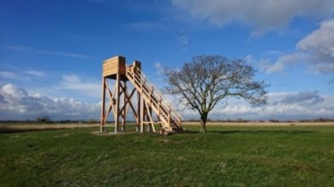
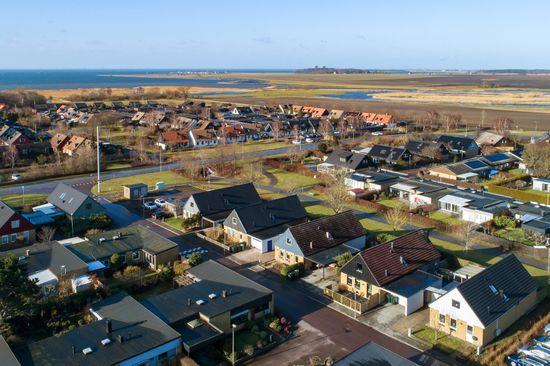
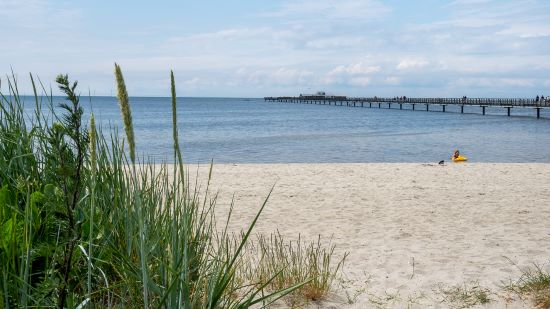
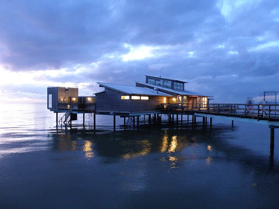
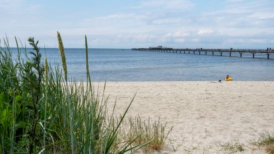
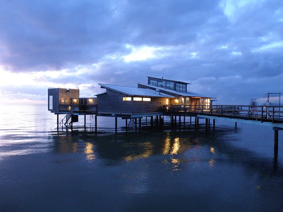
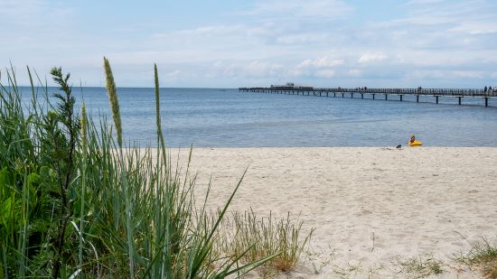
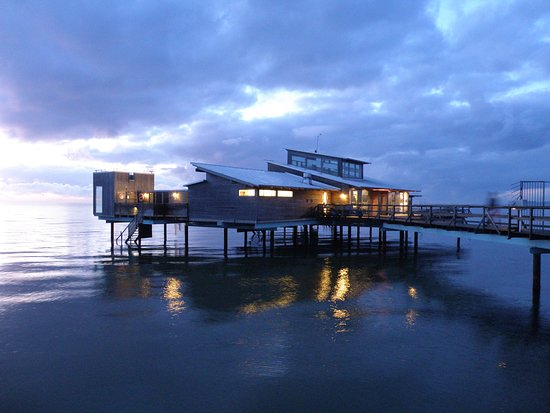

Bjärred är en kustliggande by som ligger norr om Malmö. Med en befolkning på strax tio tusen invånare så är den varken den minsta men långt ifrån den största byn i skåne. Med tilgång till havet, nära till städer och mycket aktivitets platser så är det en väldigt mysig by att besöka och att bebo sig i.


 




